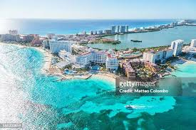

About Cancun
Cancun, located on the northeast coast of the Yucatán Peninsula in Mexico, is renowned for its stunning Caribbean beaches, vibrant nightlife, and luxurious resorts. Many of its facilities are designed to be accessible, offering wheelchair ramps, accessible tours, and more.